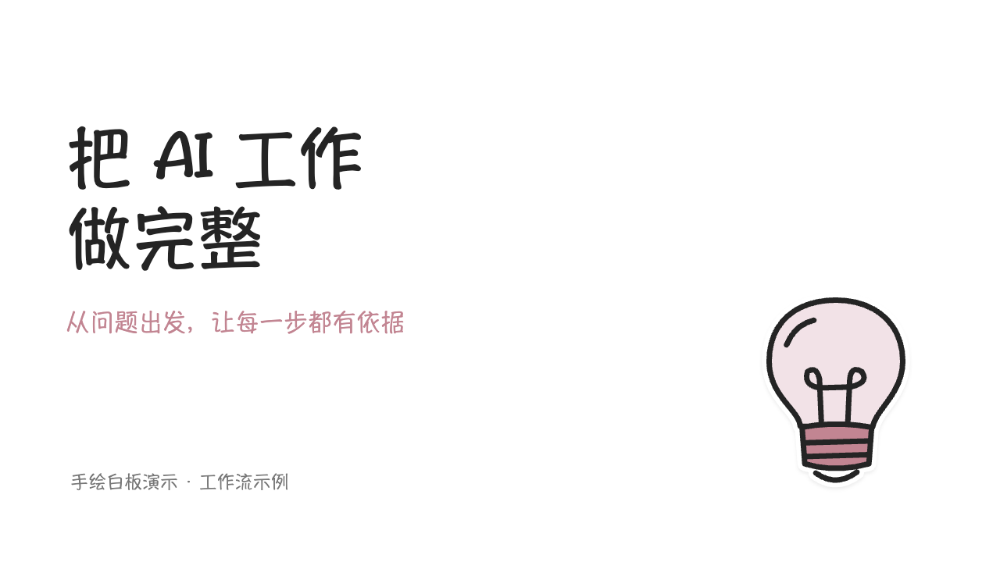
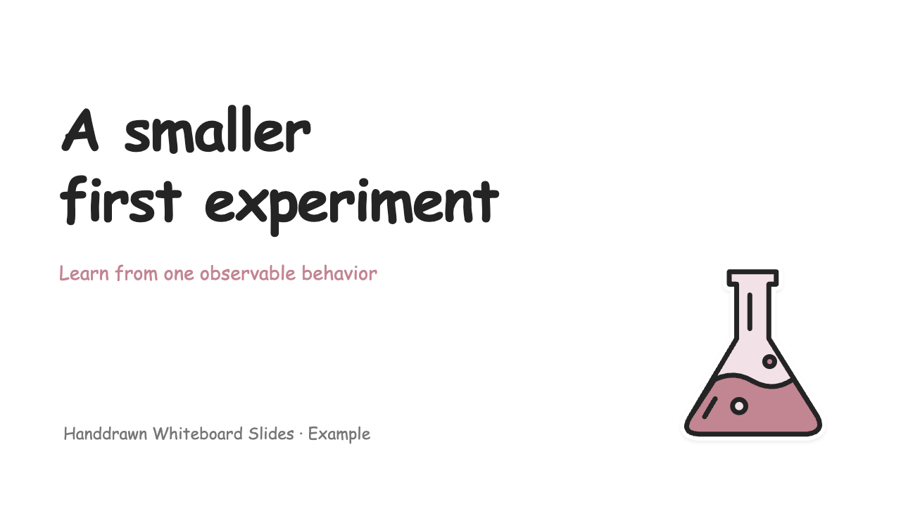
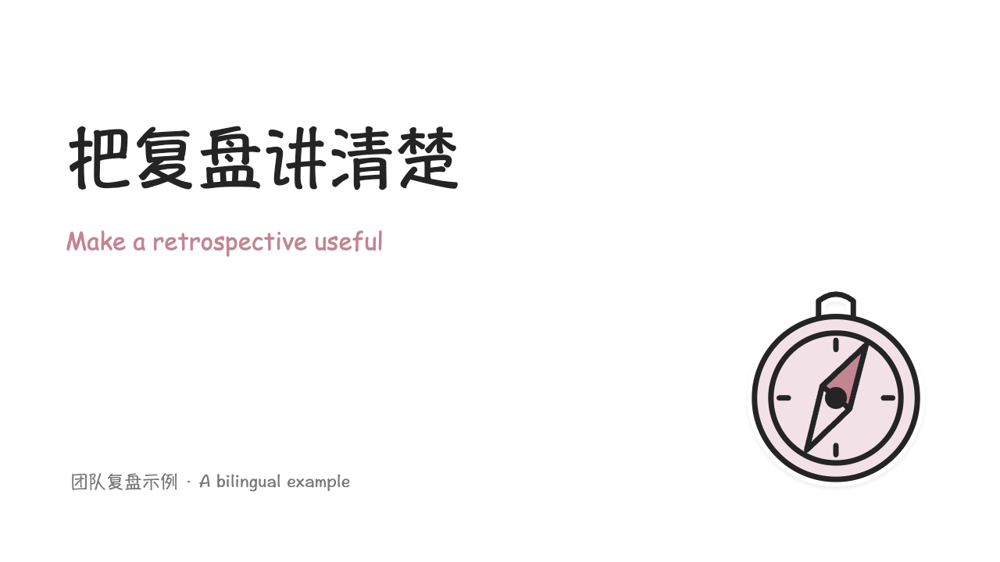

白底、手写字、粉色强调，还有与内容有关的小物件。Handwritten slides, a little pink, and a clear idea on each page.

中文 · 5 页 · 工作流讲解

English · 4 slides · Product experiment

中英双语 · 4 页 · 团队复盘
PDF: AI 工作流 · Product experiment · 团队复盘
浏览 12 张贴纸 / Browse the sticker pack · GitHub